Le jour du mariage est un moment unique et magique, où la robe de mariage est la pièce centrale de votre look. Avec la variété de styles, tissus, coupes et couleurs disponibles, vous aurez l’embarras du choix ! Les robes de mariée se déclinent sous toutes le coutures pour vous sublimer, mais choisir LA robe peut s’avérer difficile. L’enjeu est de pouvoir mettre en valeur vos atouts tout en dissimulant vos petits défauts. Découvrez dans cet article des conseils pour choisir LA robe de mariée parfaite dans la région bordelaise !
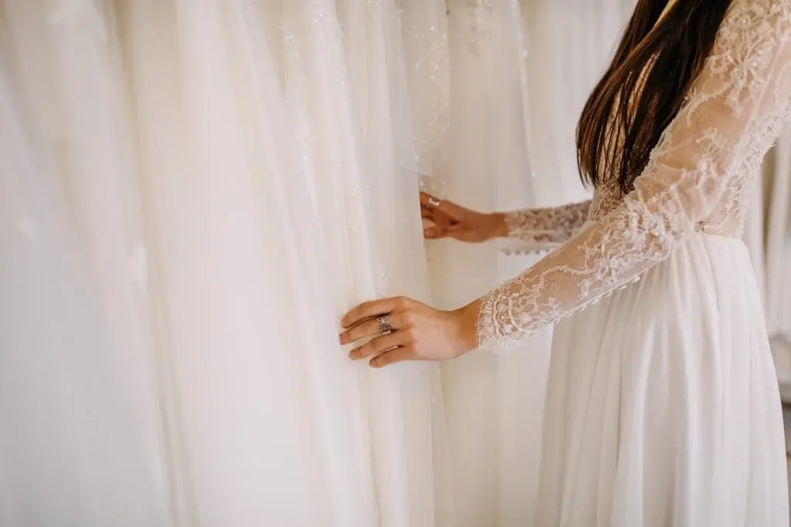
Quelle est votre morphologie ?
Vous avez peut-être déjà une idée du modèle que vous souhaitez ? L’essayage est primordial car parfois la coupe des robes ne correspond pas à votre morphologie. Il se peut que vous ayez un coup de foudre pour une robe mais en l’essayant vous changez d’avis et finissez par en choisir une complètement différente. Pour déterminer ce qui vous convient, il est essentiel de commencer par définir votre silhouette parmi les 5 morphologies suivantes :

Triangle inversé
Si vos épaules sont plus larges que vos hanches et que votre taille n’est pas très marquée.
Conseils : Le but principal est de créer du volume en bas tout en évitant de surcharger au niveau des épaules. De quelle manière ? Avec un décolleté fermé et un bas ample.
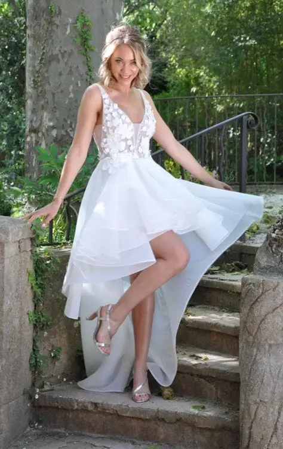

Coupe recommandées : Les robes à décolleté en V ou plongeant sont parfaites pour les silhouettes de type V. Les robes asymétriques ou courtes peuvent aussi sublimer vos jambes tout en atténuant l’apparence carrée de vos épaules.
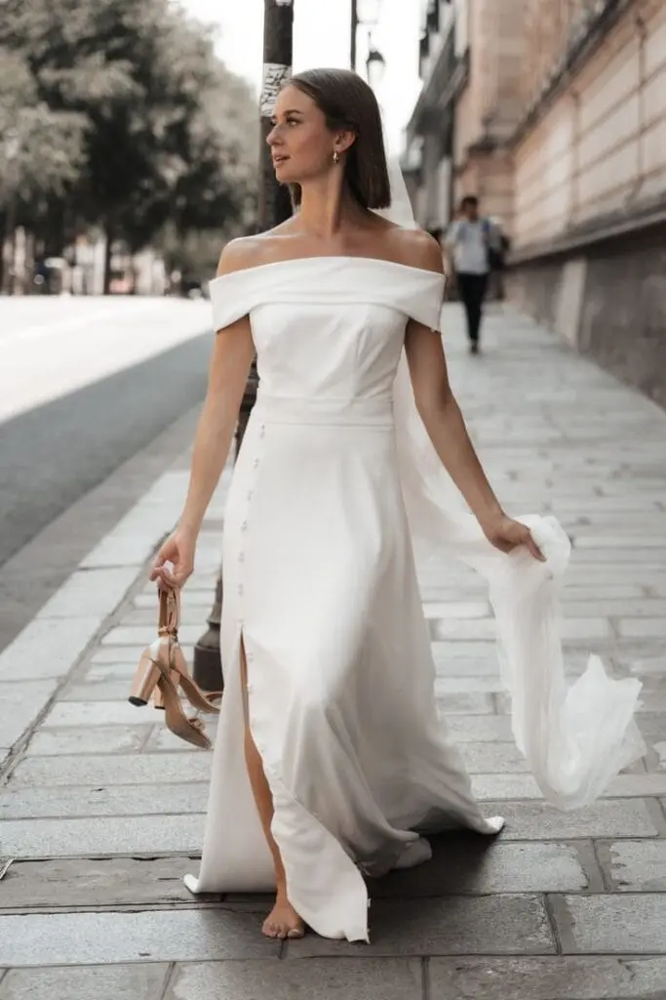
Coupe déconseillée : décolleté empire
Rectangle
Si vos épaules, votre taille et vos hanches ont une taille similaire.
Conseils : L’objectif est d’élancer votre silhouette et créer l’illusion d’une taille plus marquée.
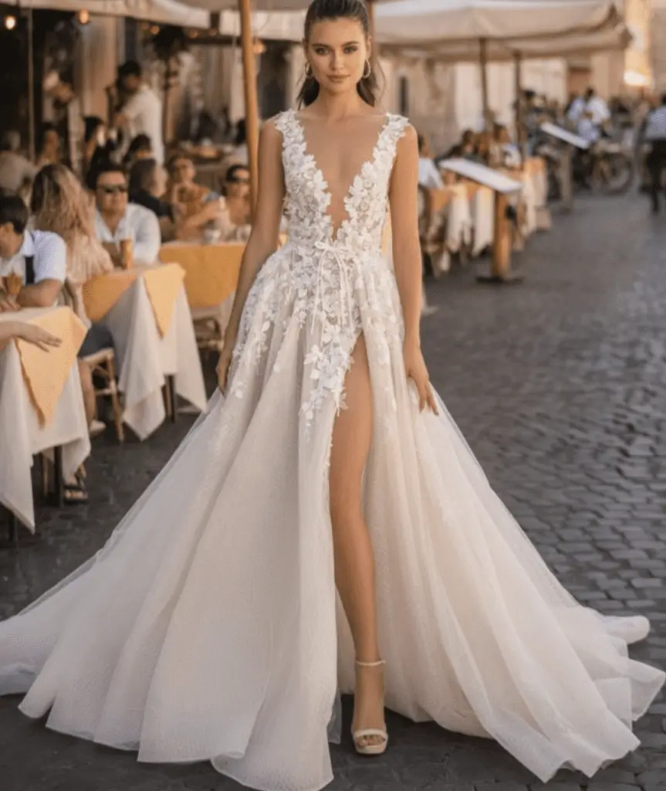
Coupes recommandées : Il faut essayer de jouer sur les volumes du bas pour accentuer les courbes des hanches par exemple avec une robe princesse.

Pour le haut, choisissez un décolleté plongeant et/ ou des encolures à dos-nu.
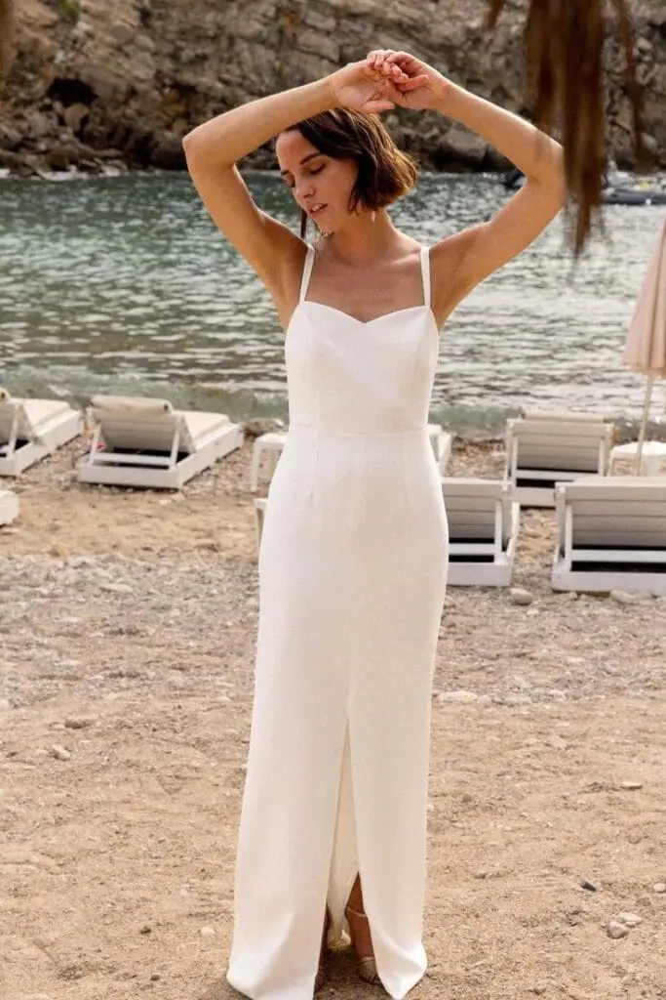
Coupes déconseillées : évitez les robes serrées, les encolures droites.
Ovale
Si vos épaules sont arrondies et que vous avez plus de volume au niveau du ventre.
Conseils : Préférez des modèles fluides qui ne soulignent pas trop vos formes généreuses. Pour ce genre de silhouette, la simplicité est de mise. On privilégie une robe épurée et raffinée, sans trop d’ornements.
Coupes recommandées : Les robes empires (taille haute), évasées, princesses vous conviennent le mieux ! N’hésitez pas à mettre en valeur votre poitrine généreuse par un décolleté en V ou en forme de cœur, et optez pour une matière légère telle que la mousseline.
Coupes déconseillées : robe sirène, droite
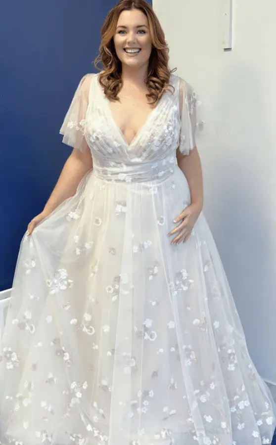
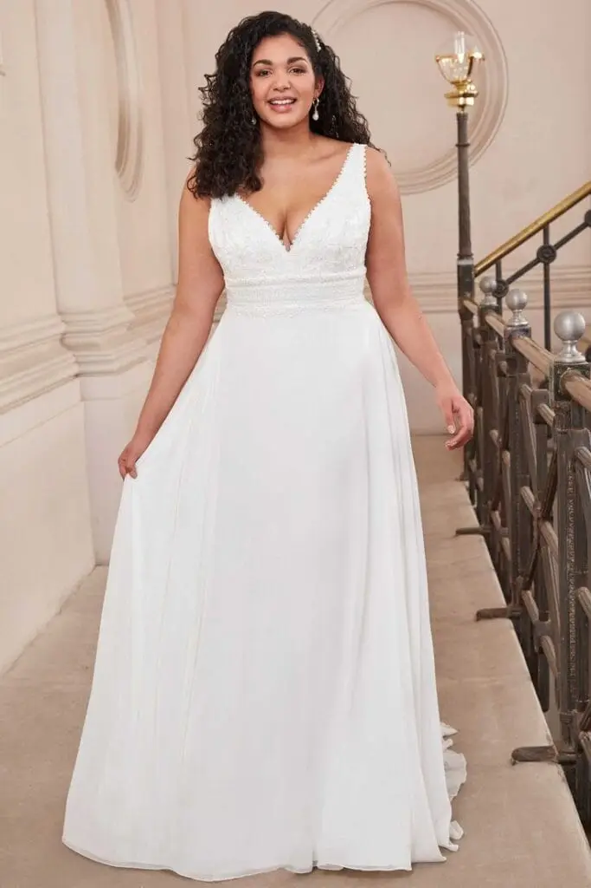
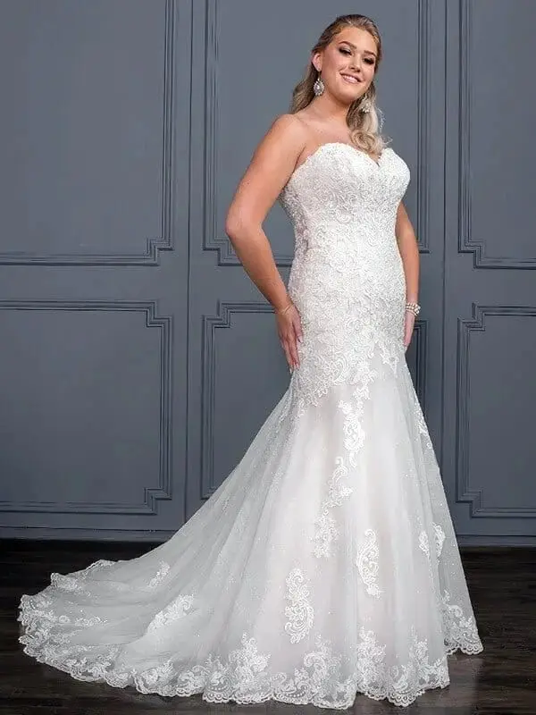
Pyramide
Si vos hanches sont plus larges que vos épaules et que votre taille est marquée.
Conseils : l’idéal est d’attirer le regard vers le haut du corps, de dissimuler vos hanches et de marquer votre taille.
Coupes recommandées : Pour le haut, optez pour des modèles à fines bretelles ou à bustiers élaborés. Si votre but est d’étoffer des épaules fines, un col bateau vous donnera une allure très séduisante. Pour le bas, choisissez une coupe plutôt évasée pour atténuer les hanches mais qui saura marquer votre taille tel qu’une robe princesse. La robe évasée vous mettrait aussi merveilleusement en valeur ! Selon vos souhaits, un joli décolleté en V, ou un bustier cœur/ droit, saura mettre en valeur votre poitrine. Les matières fluides et vaporeuses sont recommandées.

Coupe déconseillée : robe sirène
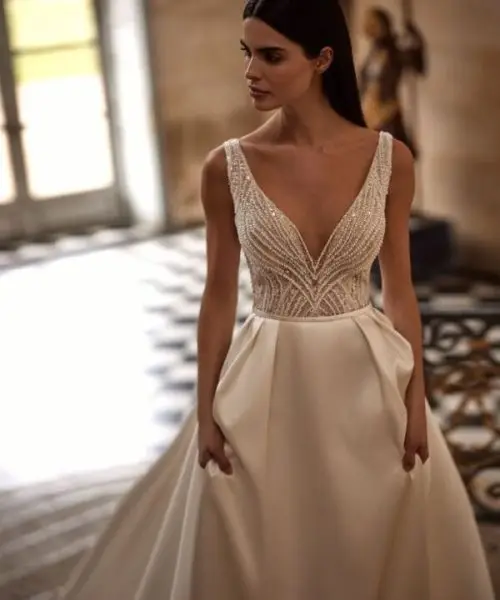
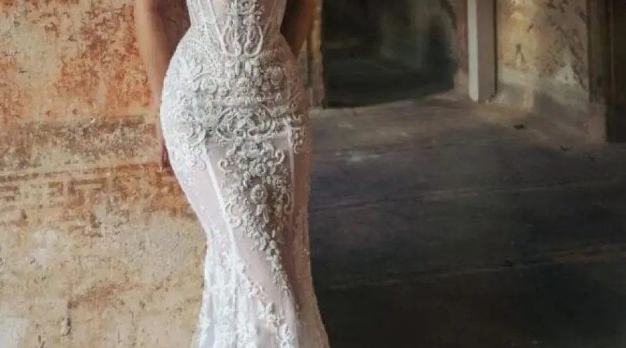
Sablier
Si vos épaules et vos hanches sont à peu près de même largeur et votre taille est marquée.
Conseils : Les personnes ayants une morphologie en X ont la chance de pouvoir porter un éventail de robes de mariées aussi variées les unes que les autres.
Coupes recommandées :
La robe sirène ou fourreau épouse les courbes naturelles du corps et accentue l’alignement entre les hanches et les épaules de la morphologie sablier. Tandis que la robe princesse souligne la taille pour ensuite s’évaser avec volupté.
De manière générale, toute robe qui est cintrée à la taille met en valeur les atouts de cette morphologie.
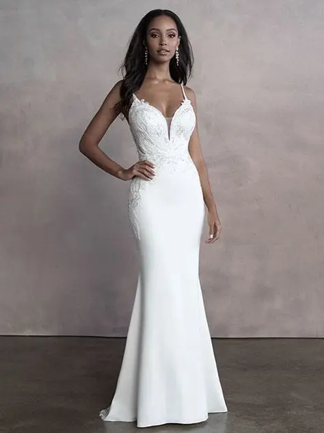
Coupe déconseillée : robe empire. La fluidité de cette coupe commence à partir de la poitrine, ce qui a tendance à minimiser une taille pourtant bien marquée.

- En fonction de la poitrine : Vous voulez dissimuler votre poitrine généreuse ? Optez pour des encolures rondes ou bateaux, mais on oublie les décolletés fermés. Au contraire, vous souhaitez créer du volume au niveau de la poitrine ? Évitez les décolletés carrés ou en V et privilégiez le décolleté cœur. Il est aussi possible d’ajouter du drapé au buste et de choisir un élégant dos nu.
- En fonction de la taille : Si vous êtes petite, les robes volumineuses ne sont pas la meilleure option car elles ont tendance à vous tasser la silhouette. Quand aux très grande, les robes taille basse ou ceinturées sont idéal car elles ne vous allongent pas.
N’oubliez pas les retouches ! Elles garantiront que votre robe soit parfaitement ajustée à votre morphologie, quelle que soit la coupe que vous choisissez.
Les types de matières et leurs spécificités
- La soie, brillance et élégance : douce sur la peau, légère, fluide, fragile et sensible aux tâches.
- La dentelle, romantisme et délicatesse : texture raffinée, effet très élégant et intemporel, se prête bien aux détails fins (manches, dos ouvert, etc.), peut être plus ou moins fine selon le type de dentelle.
- La tulle, légèreté et volume : effet aérien, donne du volume sans alourdir, peut être combinée avec d’autres matières pour un effet de superposition, nécessite souvent un sous-robe ou une doublure car si elle est utilisée seul, peut être trop transparente.
- La crêpe, épuré et simple : Légère, fluide, facile à porter et à entretenir, simple mais sophistiquée, peut manquer de « tenue » dans certaines coupes.
- Le mikado, épais et sophistiqué : rigide tout en étant doux au toucher, idéal pour des robes volumineuses ou des coupes sculptées, plus lourd que d’autres tissus et moins fluide.
- Le voile de coton, naturel et confortable : style décontracté, facile à entretenir et respirant, idéal pour un mariage d’été.
- La mousseline, fluide et très légère : texture aérienne, effet vaporeux, semi-transparente.
- Le brocart, luxe et texture riche : tissu orné d’or ou d’argent, motifs généralement végétaux ou géométriques d’inspiration orientale, parfait pour les mariages d’hiver ou dans des lieux majestueux, lourd, difficile à porter pendant une longue période.
- Le velours, douceur et chaleur : confortable, allure élégante et sophistiquée, texture épaisse qui garde la chaleur, idéal pour un mariage en hiver, moins fluide et plus lourd que d’autres tissus.
Vous l’aurez donc compris, si vous recherchez une robe de mariée élégante et sophistiquée, la soie, le satin, ou encore le mikado sont fait pour vous ! Vous préférez une tenue plus fluide, romantique ? Dans ce cas, le tulle, la dentelle ou la mousseline seront parfaits. Enfin, si vous êtes une mariée décontractée, le coton ou le crêpe offriront confort et style.
Dites-moi votre carnation et je vous dirais quelle couleur de robe il vous faut…
Afin que la robe de mariée vous mette le plus en valeur possible, prenez en compte la carnation de votre peau, cela mettra en avant votre beauté naturelle. Voici quelques conseils :
- Les teints clairs : Il est conseillé d’éviter le blanc pur, qui peut donner une impression terne. L’ivoire et le blanc cassé ajoutent une note de chaleur et sont plus flatteuses pour les teints pâles.
- Les teints rosés : Ce type de peau s’accorde parfaitement avec l’ivoire, car sa nuance légèrement jaune réchauffe le visage sans mettre en évidence les rougeurs.
- Les teints dorées, olivâtres ou sombres : Le blanc cassé donne un rendu lumineux sans créer un contraste trop fort avec cette carnation. Les nuances crème se marient aussi généralement bien avec ce type de peau.
Lors de votre mariage à Bordeaux, il est probable que vous porterez votre robe pendant plusieurs heures. Il est donc essentiel qu’elle soit non seulement esthétique, mais surtout agréable à porter. Le tissu est-il assez léger ? La robe ne traine pas par terre ? Y-a t’il une liberté de mouvement ?
Certaines robes peuvent être assez épaisses ou difficiles à ajuster, ce qui peut nuire à votre confort. Tenez compte de la fluidité de la coupe, de la longueur de la robe, car oui une longue traine ou une robe sirène est magnifique ! Mais sera t’il facile de marcher, danser, s’asseoir, lever les bras tout au long de la journée ? Si un mouvement vous semble compliqué à effectuer, alors ce n’est pas la robe parfaite.
Ce serait dommage que ces aspects vous gâche le jour, censé être le plus beau de votre vie, n’est-ce pas ?
Pensez au confort !
L'âge un critère important !
Vous avez 20 ans et vous rêvez d’une robe sirène pailletée ? Ou vous avez plus de 50 ans et vous êtes plus « confort avant tout » tout en restant glamour ? Peu importe votre âge, voici les conseils essentiels pour choisir LA robe de mariée unique qui vous sublimera :
- Ah, les jeunes années (20-30 ans) ! Vous êtes avide d’essayer tout ce qui vous fait rêver, n’est-ce pas ? Une robe sirène qui attire tous les regards ? Oui ! Une robe bohème et légère ? Pourquoi pas ! Et pourquoi ne pas ajouter une touche de couleur pour un peu de gaieté ?
À cet âge, vous pouvez opter pour des robes fluides ou ajustées, avec des tissus légers comme la mousseline ou la dentelle. Côté accessoires, vous pouvez jouer la carte moderne avec une couronne de fleurs ou des chaussures originales pour compléter votre look.
- À 30-40 ans, vous êtes dans la fleur de l’âge, mais avec un petit soupçon de sagesse en plus, pas vrai ? Vous savez ce que vous voulez et vous cherchez une robe qui allie confort, élégance et sophistication. Vous voulez une robe intemporelle mais moderne, qui vous met en valeur sans en faire trop ?
La coupe droite ou empire serez un bon choix, tout comme des tissus nobles tels que la soie, le satin ou la dentelle.
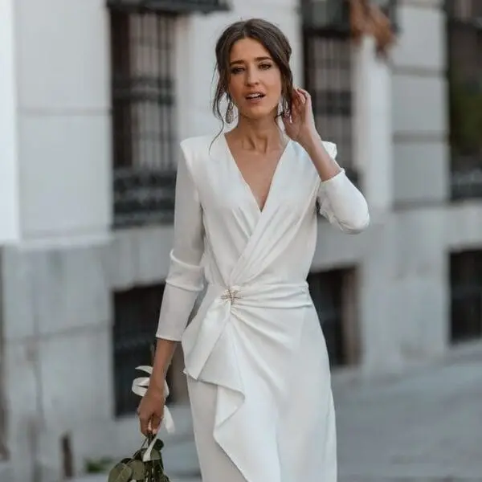
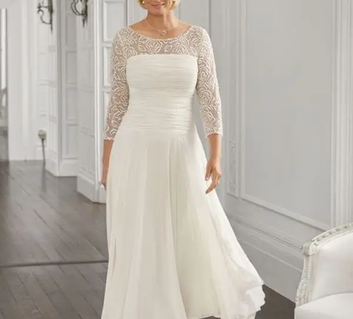
- À partir de 40 ans, le confort passe avant tout ! Fini les robes où vous vous demandez si vous allez pouvoir respirer ou faire un mouvement sans être comprimée ! Vous voulez une robe qui met en valeur vos formes sans être trop ostentatoire ?
Les coupes A-line ou empire sont parfaites pour toutes les silhouettes et très confortables. Parce qu’une robe qui vous fait « flotter » plutôt qu’être coincée, ça vous parle ? Néanmoins, vous pouvez aussi choisir une robe midi ou courte, histoire de pouvoir bouger, danser et même courir si jamais le gâteau prend feu !
- À 50 ans et plus, vous désirez une robe qui fait un clin d’œil à votre jeunesse sans tomber dans la robe de bal de Cendrillon ? Alors oubliez les corsets qui vous coupent la respiration (on est d’accord, vous avez bien assez vécu pour ça !), et privilégiez des tissus fluides comme la mousseline, la soie ou la crêpe. Ces matières fluides tombent joliment et permettent une grande liberté de mouvement !
La robe portefeuille, chic et flatteuse est aussi un excellent choix. Et si vous ne vous sentez pas à l’aise en robe longue, une robe midi ou courte peut être une option élégante et pratique. Quand aux accessoires, rappelez-vous : moins c’est souvent plus ! Un voile court, une jolie paire de boucles d’oreilles, un bracelet discret, et voilà, vous êtes prête à briller sans ressembler à un sapin de Noël !
Quel que soit votre âge, la clé est de choisir une robe dans laquelle vous vous sentez vous-même. Vous allez briller, quel que soit le style ou la coupe. Et rappelez-vous, l’âge n’est qu’un chiffre… mais une robe qui vous va à la perfection, ça, c’est l’essentiel !
Les principaux accessoires
Chaque accessoire est unique, il doit compléter la robe sans la surcharger. Comme le disait si bien Léonard de Vinci : » Les détails font la perfection et la perfection n’est pas un détail » d’où l’idée de trouver un bon équilibre. Ces suggestions vous aiderons à assortir votre robe aux accessoires :
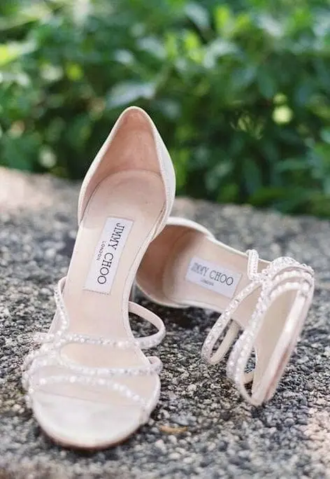
Chaussures
Si votre robe est longue, sélectionnez des chaussures discrètes comme des escarpins ou des sandales à talons carrés. Si vous souhaitez rester confortable, des ballerines ou des mocassins peuvent également convenir, mais veillez à ne pas couper la ligne de la robe.
Votre robe est très travaillée, avec des détails ou des motifs ? Dans ce cas, choisissez des chaussures simples, neutres ou avec une couleur qui rappelle celle de la robe !

Voile
Le voile est une option à la fois sobre et indémodable pour un mariage.
Votre robe présente-t-elle un décolleté en tulle ou des détails tels que des broderies ? Alors, un léger voile en tulle ou en dentelle complétera votre look !
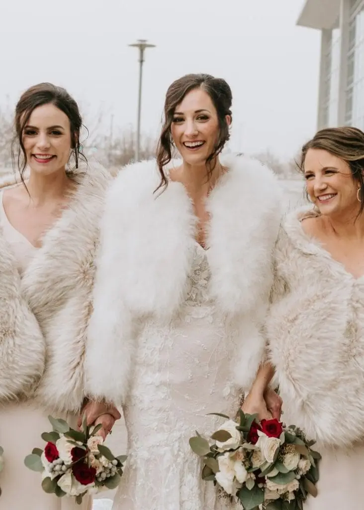
Veste/ Châle
Pour un mariage hivernal, si vous voulez rester au chaud sans ressembler à un esquimau, une veste en fourrure ou une étole en satin constitue une bonne option.
Si votre robe est déjà ultra-habillée, un châle ou une cape légère suffira pour éviter de tomber dans le style « hiver à la montagne ».
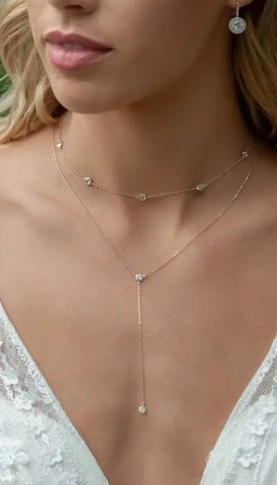
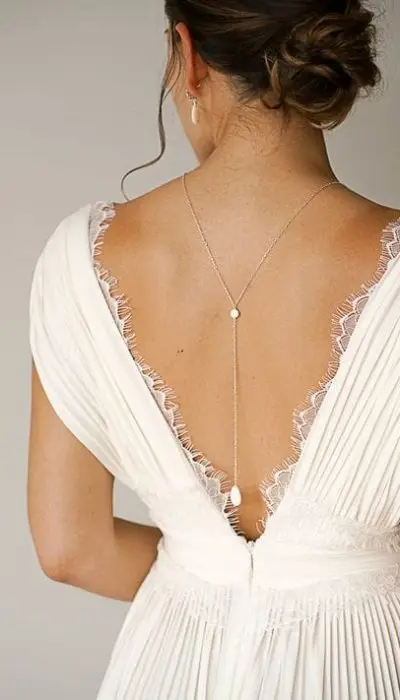
Bijoux
Les bijoux, c’est un peu comme le sel dans un plat : trop, et ça gâche tout !
Pour une robe à col haut ou avec des détails près du cou, oubliez les colliers, orientez vous plutôt vers des boucles d’oreilles et des bracelets.
Au contraire, si votre robe est plus simple, privilégiez des bijoux plus voyants, comme une grosse bague.

Fleurs
Ah, les fleurs ! C’est un peu la cerise sur le gâteau d’un mariage : fraîche, romantique, et ça sent bon en plus ! Harmonisez les donc avec votre robe :
- Plutôt robe classique ? Des roses blanches, des pivoines ou des orchidées s’accorderont parfaitement ! Ou robe audacieuse ? Privilégiez alors des fleurs dans des teintes neutres telles que le blanc, crème ou du feuillage.
- Choisissez des fleurs de saison : Printemps (jonquille, narcisse, pivoine, freesia). Été (tournesol, rose, hortensia, pois de senteur, campanule, lys, lavande). Automne (dahlia, chrysanthème, l’orchidée, chardon, pavot, protea, hortensia). Hiver (amaryllis, mimosa, jasmin, camélia).
- Renseignez-vous sur les formes de bouquets, il en existe pleins (bohème, rond, cascade…)
Certaines fleurs ont une symbolique : roses pour l’amour, pivoines pour la prospérité, etc. Choisissez celles qui vous parlent !
Laissez-vous du temps
Prenez le temps de bien choisir votre robe de mariée… Vous savez, ce n’est pas une décision à prendre à la légère, comme choisir entre deux produits aux courses ! Alors, pourquoi ne pas commencer vos recherches 9 à 1 an avant le jour J ? Vous vous dites : « Un an avant, vraiment ? » Eh bien oui, croyez-moi, ça vaut le coup ! Ce délai est suffisant pour essayer plusieurs styles, vous accorder du temps pour les ajustements, et même trouver le modèle qui vous fera dire : « C’est LA robe ! » (Vous savez, celle où vous vous sentez comme une déesse et où vous attendez qu’un vent imaginaire souffle dans vos cheveux…).
Pourquoi attendre à la dernière minute et risquer de vous retrouver dans un stress infini à courir d’un magasin à l’autre ? Le but, c’est de choisir sans pression. Et si vous avez trouvé la robe de vos rêves en une seule séance, eh bien, vous êtes clairement une légende. Mais pour la plupart d’entre nous, un peu de temps et de réflexion ne feront pas de mal.
Alors, vous êtes prête à plonger dans l’aventure de la robe parfaite ou vous préférez attendre 3 semaines avant le mariage pour découvrir que la robe que vous aimez est en rupture de stock ?
Faites appel à des professionnels pour vous conseiller
Je pourrais être une alliée de taille dans la sélection de votre robe de mariage. En effet, au-delà de connaître les meilleurs designers et magasins, savez-vous que je peux aussi vous orienter en fonction de votre thème, de vos besoins et de votre budget ? Je vous recommande notamment deux boutiques de robe exceptionnel à Bordeaux : la maison NCV COUTURE, LES FILLES FIDÈLES
Un consultant en robe de mariée pourra également vous conseiller sur ce qui vous mettra le plus en valeur, en tenant compte de votre morphologie et de vos envies ? Que diriez-vous d’un accompagnement personnalisé, où chaque détail compte, afin d’éviter des erreurs d’achat coûteuses ?
Alors, êtes-vous prête à faire appel à nous pour trouver la robe de vos rêves sans stress ?

Gardez en tête votre budget
Fixez-vous un budget avant de débuter vos recherches et efforcez-vous de le tenir, tout en gardant des attentes réalistes. Les prix des robes peuvent varier grandement selon le/ la designer, le tissu, la complexité du modèle, les détails (broderies, perles, dentelles…). Plusieurs choix s’offrent à vous selon votre souhait :
- Achat neuf : Si votre budget vous le permet et que vous êtes à la recherche d'une robe de créateur unique ou d'un modèle précis.
- Location : Une solution avec un bon rapport qualité/prix pour porter une robe de designer sans avoir à l’acheter, faites juste attention à ne pas l’abîmer.
- Sur-mesure : Si vous souhaitez une robe exclusive et personnalisée (plus coûteux que l’achat).
Essayez plusieurs robes
Ne vous limitez pas dans vos essayages, même si vous avez une idée de robe bien précise en tête ! Il est nécessaire de découvrir différents styles de robe pour savoir lequel vous convient le plus. Il arrive parfois que la robe parfaite ne soit pas un modèle envisagé au départ.
Soyez ouverte et comme indiqué précédemment, bien que certaines robes se marient mieux à des morphologies spécifiques, il n’y a pas de règles strictes. L’essentiel est de vous sentir à l’aise et magnifique dans la robe choisie.
Le mot d’ordre est l’écoute… l’écoute de votre cœur lors de ce choix chargé d’émotion !
En bref...
Pour choisir votre robe de mariée, penez en compte :
- votre morphologie, c’est la base !
- les matières
- votre carnation
- le côté pratique
- l’âge, ça compte aussi… un peu
- prenez le temps de choisir
- faites appel à des professionnels
- définissez le budget
- essayez tout, vraiment tout !
Pour finir soyez vous-même, choisissez une robe qui vous fait briller et surtout, restez relaxe ! Ce n’est pas une mission impossible… juste un peu de shopping avec un soupçon de magie.
Lovely Day Event c'est plusieurs types de prestations
L'organisation de mariage
Je vais intervenir sur toutes les étapes de vos préparatifs et vous guider dans vos choix. Je suis force de proposition pour que votre mariage ne ressemble qu’à vous.
Décoration de mariage
Créative et passionnée, je suis certifiée Wedding Designer et je conçois une ambiance scénographique qui correspond au thème de votre mariage.
Coordination le jour J
Je serai le chef d’orchestre pour gérer les différents prestataires, la mise en place de votre décoration et le déroulement de cette belle journée.